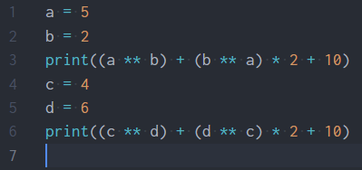
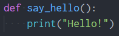
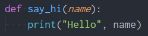

ฟังก์ชัน(Function) คือการแยกโค้ด(Code) ออกมาเป็นส่วนย่อยๆครับ เพื่อที่จะทําให้เราสามารถเรียกใช้ซ้ำได้โดยไม่ต้องเขียนขึ้นใหม่ในบางครั้งที่มีการทำงานแบบเดิมซ้ำๆครับ ยกตัวอย่างเช่น
จากรูปนะครับ สังเกตว่าผมได้มีการคํานวนสมการที่เหมือนกันอยู่ 2 รอบครับ ซึ่งลองคิดภาพว่าเราต้องคํานวนสมการนี้สัก 10 รอบสิครับว่าจะเกิดอะไรขึ้น?
เราจึงสามารถนําสิ่งที่เรียกว่า Function มาช่วยได้ครับซึ่งมันคืออะไรเดียวมาดูกันครับ
หลักการของ Function ก็คือการที่เรา โยนค่า(หรือไม่โยนก็ได้) เข้าไปแล้วจะได้รับค่ากลับมา(หรือไม่ได้รับกลับมาก็ได้)ครับ
โดย Function เนี่ยจะมีสิ่งที่เราควรจะรู้จักหลักๆอยู่ 2 อย่างครับ
User-Defined Fuction
ในการประกาศ Function เราสามารถทําได้โดยใช้ใช้คําสั่ง "def <ชื่อfunction>() :" ครับ ยกตัวอย่างเช่น
จากรูปเป็นการประกาศ function ที่ชื่อว่า say_hello ครับโดยจะไม่มีการรับค่าและคืนค่าซึ่งหากเราเรียกใช้เนี่ยก็จะทําการแสดงข้อความว่า "Hello!" ออกมาครับ
จากรูปเป็นการประกาศ function ที่ชื่อว่า say_hi ครับโดยจะมี Parameter 1 ตัวก็คือ name ครับและจะทําการแสดงข้อความคือ Hello ตามด้วยชื่อที่รับเข้ามาหากเรียกใช้ครับ
______รูป_______
ประเภทของ Function มีอยู่ 2 ประเภท ได้แก่
Void function
______รูป_______
Fruitful function
______รูป_______
ฺBuilt-in Function คือ
function ที่ python มีให้อยู่เเล้ว เราสามารถเรียกใช้ได้เลยครับ เช่น print(), input(), int(), float(), str()
Built-in Function มีอะไรบ้าง
ตาราง ASCII Link: www.asciitable.com
หากอยากศึกษาเกี่ยวกับ Built-in Function เพิ่มเติมสามารถกดที่ Link นี้ได้เลยครับ: https://docs.python.org/3/library/functions.html
Math module
คือ funciton ทางคณิตศาสตร์อยทีู่่ใน math module เช่น sin, cos, tan, sqrt ซึ่งเวลาเราจะใช้เราจะต้องทำการ import เข้ามาก่อนครับ การประกาศควรจะอยู่นอก function เสมอครับ
______รูป_______
How to call function
การเรียกใช้ module math หลังจากที่เรา import เเล้ว เราจะใช้ได้โดยการพิมพ์คำว่า math.(function ที่เราต้องการเรียกใช้ครับ)
Math function
Math function (trigonometry)
Math function (trigonometry)
คือ math function ที่เป็น trigonometry จะรับ Arguments เป็นหน่วย radians เช่น จะหาค่าของ sin 30 องศา ต้องแปลงเป็น radians ก่อนครับ คือ math.radians(30) เราจะได้ 0.5235987755982988 หรือ math.sin(math.radians(30)) เราจะได้ 0.49999999999994
Math function (logarithmic)
เทคนิคของการ import
หากเราไม่อยากพิมพ์คำว่า math.(function) เราสามารถเปลี่ยนได้ เช่น
______รูป_______
เทคนิคของการ import
หากเราต้องการ import แค่ยาง function ของ math module สามารถทำแบบนี้ได้ครับ
______รูป_______
เทคนิคของการ import
หากเราอยาก import ทั้งหมด แต่เราไม่อยากพิมพ์ math. เราสามารถทำแบบนี้ได้ครับ
______รูป_______